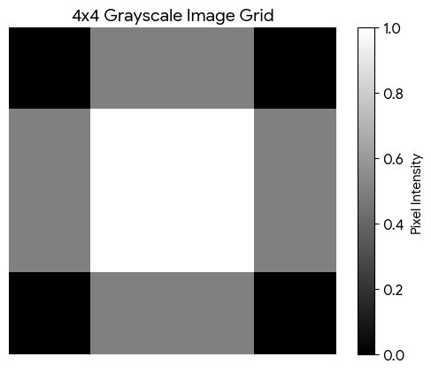
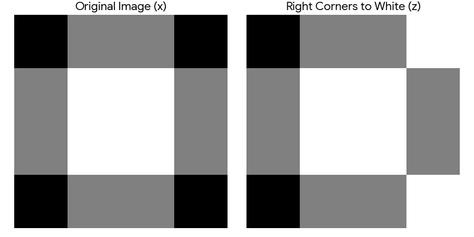
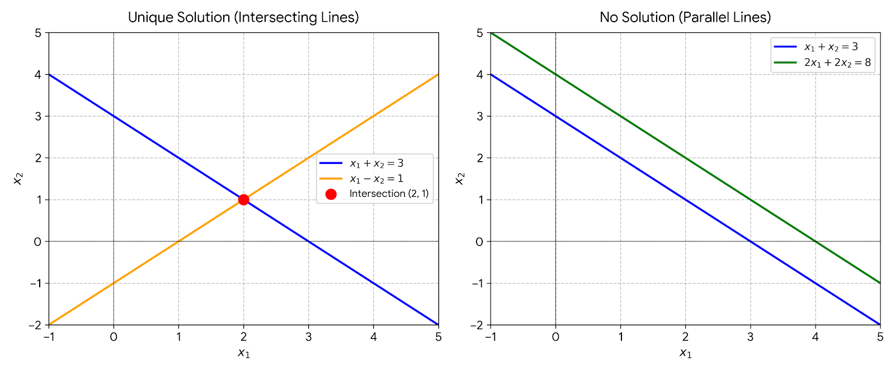

Definition A vector is an ordered sequence or list of numbers. Example:v=[1,2,3] or v=123
In the context of Data Science and Machine Learning, we interpret a vector as a feature vector representing a single data instance or sample. If we collect d distinct attributes (features) about an object, that object is represented as a vector residing in a d-dimensional space, denoted as Rd. Mathematical Representation: A vector x∈Rd is typically expressed as a column matrix:x=x1x2⋮xd
ExampleText and Natural Language Processing (NLP): In document analysis or search engines, a piece of text can be mathematically encoded into a vector using term frequencies (or embeddings). Let’s represent a short document based on the vocabulary count of five words: Text: "Data security is important because data leaks damage trust." Feature Space:["data", "security", "leaks", "trust", "algorithm"] Resulting Vector xdoc=21110
Insight
In NLP, Vocabulary (The Vector Space) is a master list of all unique words the AI is programmed to recognize. Sentiment Weight Vector is a matching vector of numbers that holds the emotional score for every single word in the vocabulary. These weights aren’t guessed; they are learned by the AI during training after reading millions of pre-labeled reviews (like 5-star or 1-star ratings). Words that appear constantly in positive reviews get high positive weights, while words frequent in complaints get negative weights. Neutral grammar words sit at zero.
Example Now consider a vocabulary set [’and’, ’also’, ’but’, ’difficult’, ’easy’, ’good’, ’great’, ’is’, ’not’]
Weights for the words in vocabulary:
Positive: great (+3.0), easy (+2.5), good (+2.0)
Negative: difficult (-2.0), but (-0.5), not (-0.5)
Neutral: and (0.0), also (0.0), is (0.0)
w=[0.0,0.0,−0.5,−2.0,2.5,2.0,3.0,0.0,−0.5] Now consider 2 sentences:
Sentence 1: "NLP is great and also easy"
Sentence 2: "NLP is not good but also difficult"
Word2vec is a technique in natural language processing for obtaining vector representations of words. Typically, the dimensionality of the vectors is set to be between 100 and 1,000.OpenAI’s text embeddings measure the relatedness of text strings. By default, the length of the embedding vector is 1536 for text-embedding-3-small or 3072 for text-embedding-3-large. The hidden internal hidden-state embedding size of the core 175B GPT-3 model architecture is 12,288 dimensions.
ExampleImage Analytics: An image can be mathematically represented as a 2D matrix of pixel intensity values. When we prepare this image for a machine learning model or computational analysis, we flatten this 2D matrix into a 1D vector. Here is the representation of a 4×4 grayscale image filled with intensity values of 0 (black), 0.5 (gray), and 1 (white) arranged as a grid (where rows and columns map to the spatial layout of the pixels), the matrix M looks like this:M=0.00.50.50.00.51.01.00.50.51.01.00.50.00.50.50.0

Figure 1. Digital Image
To convert this image into data suitable for a neural network or vector operations, we unroll or "flatten" the matrix row-by-row (known as row-major order). This transforms the 4×4 spatial grid into a 16-dimensional feature vector x∈R16: xT=[0.00.50.50.00.51.01.00.50.51.01.00.50.00.50.50.0] Now by replacing 0.0→1.0, 1.0→0.0, and keeping 0.5→0.5, we get the following spatial matrix representation: Minverted=1.00.50.51.00.50.00.00.50.50.00.00.51.00.50.51.0 and yT=[1.00.50.51.00.50.00.00.50.50.00.00.51.00.50.51.0] Corresponding image is as follows:
Cosine Similarity measures the cosine of the angle between two multi-dimensional vectors. It evaluates directional orientation rather than scale, ranging from −1 (exactly opposite) to +1 (exactly identical). Cosine Similarity=∥x∥∥y∥x⋅y For the above example we get Cosine Similarity=6×62.0=6.02.0=31≈0.3333 A score of 31 shows a mild positive similarity. Even though we flipped the structural extreme opposites (black and white pixels), they still share a common, un-flipped spatial feature framework—namely, the gray borders (0.5), which preserve enough shared signal weight to keep the similarity metric above 0.0.
If we had completely inverted the gray values as well (e.g., 0.5→−0.5 or mapping to a strict binary inverse), the dot product would collapse further, signaling a negative or orthogonal relational correlation.
Let’s modify the image vector by changing only the right corners from black (0.0) to white (1.0), while keeping all other pixels identical to the original image x. We get:

Figure 3. Similarity Search Example 02
Cosine Similarity=6×86.0=486.0=436.0=233=23≈0.8660 Flipping just two out of the sixteen pixels from black to white yields a high similarity score of 86.6%.
A collection of one or more linear equations involving the same set of variables. It can be written compactly in matrix form as:Ax=b Where:
A is an m×n matrix of coefficients (e.g., feature matrix).
x is an n×1 vector of unknowns (e.g., model weights or parameters).
b is an m×1 output vector (e.g., target labels or ground truth).
Example1:1x1+2x23x1+4x2=5=11 This system can be written in the matrix form Ax=b as: [1324][x1x2]=[511]
Example2: Let’s look at a concrete dataset of house pricing:
Feature 1 (x1): Size of the house (in thousands of square feet).
Feature 2 (x2): Number of bedrooms.Target (b): Price of the house (in hundreds of thousands of dollars).
Suppose we have gathered data from two houses:
House 1: 1,000 sq. ft (x1=1), 2 bedrooms (x2=2), sold for Rs. 5 lakhs (b1=5).
House 2: 3,000 sq. ft (x1=3), 4 bedrooms (x2=4), sold for Rs. 11 lakhs (b2=11).
We want to find the model weights (w1,w2) that satisfy this data exactly:[1324][w1w2]=[511]By solving this system (using methods like Gauss-Jordan elimination), we find w1=1 and w2=2. This gives us our predictive model: Price=1×(Size)+2×(Bedrooms)
Geometrically, each linear equation in a system represents a hyperplane in an n-dimensional space Rn. In a 2D space (R2), a linear equation represents a line. In a 3D space (R3), a linear equation represents a flat plane. The solution to a system of linear equations is the intersection of these hyperplanes. There are three possible geometric outcomes for a linear system: Unique Solution: The hyperplanes intersect at exactly one point. (The system is consistent and independent). rank(A)=rank([A∣b])=n Infinite Solutions: The hyperplanes align perfectly or intersect along an entire line/subspace, meaning they represent redundant features. (The system is consistent and dependent). rank(A)=rank([A∣b])<n No Solution: The hyperplanes are parallel and never intersect, meaning the target vector b lies outside the column space of A. (The system is inconsistent). rank(A)<rank([A∣b])
Let us visually contrast a unique solution system against a system with no solution using lines in R2:
Case A (Unique Solution):x1+x2x1−x2=3=1These represent two distinct lines that intersect exactly at the point (2,1).
Case B (No Solution):x1+x22x1+2x2=3=8 These represent two parallel lines that will never cross.

Figure 4. Geometrical interpretation of the solution to system of equations
Problem 1 Solve the following 3×3 linear system and interpret it geometrically:x1+x2+x32x1+3x2+2x3x1+2x2+3x3=6=14=14[A∣b]=121132123∣∣∣61414 Using these row operations: R2←R2−2R1:R3←R3−R1:R3←R3−R2: we get: [A∣b]=100110102∣∣∣626rank(A)=rank([A∣b])=n The unique solution vector is x=[1,2,3]
Problem 2 Solve the following 3×3 linear system and interpret it geometrically:x1+2x2+x32x1+5x2+4x33x1+7x2+5x3=4=11=15[A∣b]=123257145∣∣∣41115 Performing these row operations: R2←R2−2R1:R3←R3−3R1:R3←R3−R2: we get: [A∣b]=100210120∣∣∣430rank(A)=rank([A∣b])<n Hence infinitely many solutions. This gives these following system of equations: x1+2x2+x3=4:x2+2x3=3
Let x3 be a free parameter, x3=t⟹x2+2t=3⇒x2=3−2t⟹x1=−2+3t.
x=[−2+3t,3−2t,t]
Problem 3 Solve the following 3×3 linear system and interpret it geometrically:x1+x2+2x32x1+3x2+5x33x1+4x2+7x3=3=7=12[A∣b]=123134257∣∣∣3712=100110210∣∣∣312rank(A)<rank([A∣b]) Consequently, the system yields no solution.
While standard Gaussian elimination stops at an Upper Triangular Matrix (Row Echelon Form - REF) and requires back-substitution to find the variables, the Gauss-Jordan method goes a step further. It uses elementary row operations to reduce a matrix completely into Reduced Row Echelon Form (RREF), where the solution can be read directly from the matrix.
A matrix is in Reduced Row Echelon Form (RREF) if it satisfies these conditions:
All rows consisting entirely of zeros are at the bottom of the matrix.
The first non-zero entry in any row is a 1 (called a leading 1 or a pivot).
Each leading 1 is the only non-zero entry in its entire column (meaning zeros must be both below and above it).
The leading 1 of a lower row occurs strictly to the right of the leading 1 of a higher row.
Example Solve the following system using the Gauss-Jordan method:x+y+z2y+5z2x+5y−z=6=−4=27[A∣b]=10212515−1∣∣∣6−427 Using these row operations: R3←R3−2R1: R3←2R3−3R2: R2←21R2+5R3: R1←21R1+R3: R1←2R1−R2:[A∣b]=4200042000−21∣∣∣21012642=100010001∣∣∣53−2 Final Solution: x=5,y=3,z=−2
The LU decomposition is a process of factorizing an n×n data or coefficient matrix A into two triangular matrices: A=LU Where:
L is a Lower Triangular Matrix (all entries above the main diagonal are 0, and the diagonal entries are typically 1).
U is an Upper Triangular Matrix (all entries below the main diagonal are 0).
Insight
If we can just compute A−1 using Gauss Elimination and Gauss Jordan, why do we need LU factorization?
When solving a system of linear equations Ax=b, both Gaussian Elimination (GE) and Gauss-Jordan (GJ) require a full computational complexity of O(n3) operations. If the coefficient/feature matrix A stays constant but the Right-Hand Side vector (RHS, b) changes, both GE and GJ force you to re-run the entire algorithm from scratch, costing an additional O(n3) operations for every single new vector.However, LU Decomposition (LUD) detaches the matrix A from the vector b. It processes matrix A into lower (L) and upper (U) triangular forms once at an initial cost of O(32n3). After this one-time step, any changing RHS vector (bnew) can be resolved using fast substitution methods costing only O(n2) operations.
Problem 4 Solve the system using LUD: 2x1+x2+x34x1+3x2+3x38x1+7x2+9x3=4=10=26
Solution248137139x1x2x3=41026 Apply Gaussian elimination to reduce matrix A to an upper triangular matrix U, while carefully recording the multipliers to build our unit lower triangular matrix L. R2←R2−2R1⟹ The multiplier is L21=2 R3←R3−4R1⟹ The multiplier is l31=4. R3←R3−3R2⟹. The multiplier is l32=3. U=200110112L=124013001 Since Ax=b⟹L(Ux)=b, let Ux=y⟹Ly=b, now solve Ly=b: y=[4,2,4] Now use calculated y vector to solve the equation Ux=yx=[1,0,2]
Note Once the LU decomposition of the coefficient matrix (A) has been computed, it can be reused for any new right-hand-side vector. For example, if the observed target values change to (bnew=[7,17,43]), there is no need to perform Gaussian elimination again.
Problem 5 A real estate analytics firm models the sale price of a house (y, in lakhs of INR) as a linear function of its Size ((x1), in thousands of sq. ft.), Number of Bedrooms ((x2)), and Distance from the City Center ((x3), in km):
y=x1w1+x2w2+x3w3,
where w1,w2,andw3 are the unknown model weights.
The firm collects data from three houses:
Feature
House 1
House 2
House 3
Size (x1, in thousands of sq. ft.)
2
4
8
Bedrooms (x2)
1
3
7
Distance (x3, in km)
1
3
9
Sale Price (y, in lakhs)
5
11
21
Form the corresponding system of linear equations and express it in the matrix form (Ax=b).
Solve the system using LU decomposition.
Later, due to changes in market conditions, only the sale prices are updated while the house features remain unchanged. The new target vector is bnew=[6,12,26]. And hence solve the updated system (Axnew=bnew).
Solution2w1+1w2+1w34w1+3w2+3w38w1+7w2+9w3=5=11=21248137139w1w2w3=51121Ax=bU=200110112,L=124013001 Solving Ly=b:124013001y1y2y3=51121⟹y=[5,1,−2]
Solving Ux=y:200110112w1w2w3=51−2x=[w1,w2,w3]=[2,2,−1]
So the linear model for y=2x1+2x2−x3 Now for the updated target value bnew, we need to recalculate the updated model weights vector xnew using our existing LU factorization.
Solving Lynew=bnew:124013001y1y2y3=61226⟹ynew=[6,0,2]
Solving Uxnew=ynew:200110112w1w2w3=602⟹xnew=[w1,w2,w3]=[3,−1,1]
Note Notice we bypassed the computationally heavy row reduction phase entirely and leap directly to basic linear substitution workflows.
Problem 6 An e-commerce logistics firm models the total processing and shipping time of an order (y, in hours) as a linear function of the total Package Weight (x1, in kg), Number of Fragile Items (x2), and Distance to the Delivery Hub (x3, in tens of km):y=x1w1+x2w2+x3w3where w1,w2,and w3 are the unknown model weights representing resource costs per unit.The firm collects performance metrics from three historical shipments:FeatureWeight (x1, in kg)Fragile Items (x2)Hub Distance (x3, in tens of km)Total Shipping Time (y, in hours)Shipment 111213Shipment 224534Shipment 317849Form the corresponding system of linear equations and express it in the matrix form (Ax=b). Solve the system using LU decomposition. Later, due to upgrades in warehouse sorting equipment, the total times change while the shipment features remain identical. The new target vector is bnew=[92845]T. Solve the updated system (Axnew=bnew).
A linear combination of a set of vectors v1,v2,…,vn is an expression formed by multiplying each vector by a scalar constant (c1,c2,…,cn) and adding the results together:y=c1v1+c2v2+⋯+cnvn=i=1∑ncivi
Example Consider two vectors v1 and v2 in the three-dimensional vector space R3:v1=123,v2=2−10 Let the chosen scalar multipliers be:c1=3,c2=−2 The resulting vector y from the linear combination:y=c1v1+c2v2 is given by y=−189 is a linear combination of v1 and v2.
Example Define a baseline "Average Face" (vˉ) as a 100×100 pixel grid containing a smooth, centered circular glow. (See (a)).
Flattened row-by-row, this grid becomes a 10,000-dimensional column vector (v∈R10000). We then establish two independent basis vectors: v1, a smooth left-to-right vertical shading gradient, and v2, a horizontal banded pattern driven by an accelerating cosine wave.By calculating the linear combination: (See (b),(c)) vresultant=vˉ+(0.60⋅v1)+(−0.50⋅v2)we observe the direct geometric effect of vector algebra on image data. Applying scalar weights (c1=0.60,c2=−0.50) modifies the pixels element-by-element. The final output is a clearly warped, elongated, and shifted pattern pushed toward the bottom-left of the frame, visually demonstrating how basis vector scaling reconstructs unique data points.
Example Transforming an RGB color image to grayscale is an another classic application of a linear combination. Each pixel’s new grayscale value is a unique weighted sum of its original Red, Green, and Blue channels.
Now create a 90×90 three-stripe image using the loops and fill first strip with red color and second with green and third with blue.
Problem 7 Check whether the vector v is a linear combination of the vectors vi
1) v=(4,−4,6);v1=(1,2,−3),v2=(2,−4,6),v3=(−1,2,−3)
Solution Let v=c1v1+c2v2+c3v3 i.e., 4−46=c112−3+c22−46+c3−12−3c1(1)+c2(2)+c3(−1)=4c1(2)+c2(−4)+c3(2)=−4c1(−3)+c2(6)+c3(−3)=6 Augmented Matrix [A∣b]: 12−32−46−12−34−46 Reduce the above matrix to Echelon form: 100220−1−10430 Hence ρ(A)=ρ(A∣B)=number of unknowns which means that the above system has many solutions: the vector v can be expressed as a linear combination of given set of vectors vi′s.
Note To find the specific combination we need to solve the above system.
2) V=(315−2);V1=(1100),V2=(1011),V3=(0−11−2),V4=(0100)
SolutionA∣B=1000110001−30000135−73ρ(A)=ρ(A∣B)=number of unknowns: which means that the above system has unique solution, the vector v can be expressed as a linear combination of given set of vectors vi′s.
Example Consider a sentence "The quick brown fox jumps over the lazy dog. Suddenly, the dog barks loudly at a small squirrel in the yard. Many other birds chirping in the tall trees fly away in fear, startled by the sudden noisy disruption."
Now consider a sentence The dog barks loudly. s=c1vthe+c2vdog+c3vbarks+c4vloudly Let us compares two ways of choosing the scalars (c1,c2,c3,c4). Case1: The scalars are all set to 0.25: s=0.25vthe+0.25vdog+0.25vbarks+0.25vloudly The word "the" doesn’t tell us anything about the topic, yet it contributes exactly as much to the final vector as "dog" or "barks". Hence the meaning gets diluted by filler words. Case2: SIF Weighting: SIF (Smooth Inverse Frequency) is an algorithm that changes the scalars based on how rare a word is. For any given word w, its scalar weight cw is calculated as:cw=a+p(w)a where p(w) is the estimated probability of the word appearing in the language (its total count divided by the total number of words in the dataset). a is a tiny threshold parameter (typically a constant between 10−3 and 10−5, like 0.0001). This parameter acts as a "buffer" to prevent ultra-rare words from blowing up to infinity and completely overpowering the sentence.
Word (w)
Paragraph Count
Paragraph p(w) (%)
SIF Weight (cw)
the
6
15.38%
0.0065
dog
2
5.13%
0.0191
barks
1
2.56%
0.0375
loudly
1
2.56%
0.0375
Table 2. SIF Weights for the Toy Paragraph (a=0.001, N=39)
Now let us map the word vectors vthe,vdog,vbarks,vloudly to another 3 dimensional vector space (toy vector space) [animal-ness,action-ness,intensity]. vthe=(0.01,0.00,0.01)vdog=(0.9,0.10,0.05)vbarks=(0.2,0.85,0.3)vloudly=(0.05,0.2,0.95) Now take the linear combination of these vectors with the weights: we get s1=(0.4330,0.3450,0.3480) Now consider another sentence A canine makes a noisy disturbance and if we do the same procedure we get s2=(0.4311,0.3390,0.3867) Because the important keywords map to similar conceptual regions and the SIF coefficients reduce the influence of common words such as the, a, and makes, the final vectors become very similar. Therefore, the computer identifies both sentences as having the same core meaning.
Key takeaway
When you type "A canine makes a noisy disturbance" into a modern AI or search engine, it calculates that coordinate, looks at its immediate geographic neighbors in its database, finds "The dog barks loudly", and serves it to you as a perfect conceptual match
Fact:All dogs are canines, but not all canines are dogs.
A set of vectors is linearly independent if no vector in the set can be built from a combination of the others. Definition A set of vectors {v1,v2,…,vn} is said to be linearly independent if the only solution to the vector equation:c1v1+c2v2+⋯+cnvn=0is the trivial solution where all ci′s are exactly zero:c1=0,c2=0,…,cn=0
Note Consider n vectors v1,v2⋅,vn∈Rn, consider the linear combination: c1v11v21⋮vm1+c2v12v22⋮vm2+⋯+cnv1nv2n⋮vmn=00⋮0 Which gives v11c1+v12c2+⋯+v1ncnv21c1+v22c2+⋯+v2ncnvm1c1+vm2c2+⋯+vmncn=0=0⋮=0 In matrix form: v11v21⋮vm1v12v22⋮vm2……⋱…v1nv2n⋮vmnc1c2⋮cn=00⋮0 When the matrix is square (n=m), we use the determinant to evaluate this exact system:
If det(A)=0: The system has only one unique solution, forcing c1=c2=⋯=cn=0. (Linearly Independent).
If det(A)=0: The system has infinitely many solutions, meaning non-zero choices for ci exist that can satisfy the equations. (Linearly Dependent).
Matrix Shape
Method
n=m
Determinant
n<m
Row reduction/Rank
n>m
Linearly dependent
Example In language, this happens when every word adds a completely fresh, unique piece of information to the sentence.
Let’s look at three words from our first sentence:vdog=(0.90,0.10,0.05)vbarks=(0.20,0.85,0.30)vloudly=(0.05,0.20,0.95)A=(vdogvbarksvloudly)=0.900.100.050.200.850.300.050.200.95det(A)=0.655=0 The matrix A is invertible (non-singular).The only solution to the system is the trivial solution: c1=0,c2=0,c3=0. Therefore, the vectors vdog, vbarks, and vloudly are strictly Linearly Independent.
Let’s look at this modified sentence: "The canine dog barks." vdog=(0.90,0.10,0.05)vbarks=(0.20,0.85,0.30)vcanine=(0.88,0.05,0.05)B=(vcaninevdogvbarks)=0.880.050.050.900.100.050.200.850.30det(B)=0.01325≈0 Because this number is technically not exactly zero, these vectors are technically, strictly speaking, still linearly independent in a pure algebraic sense. But 0.013 is very close to zero so AI recognizes this as mathematical redundant.
Key takeaway
When you ask an AI to rephrase or clean up a sentence, it is programmed to maximize information density while minimizing redundancy.
A vector space (or linear space) is a collection of objects called vectors, along with a set of scalars (usually real numbers), completely governed by two primary operations:
1
Vector Addition: Combining two vectors together (u+v).
2
Scalar Multiplication: Scaling a vector by a number (cv).
Axioms of Vector Spaces
Closure under Addition: If u and v are in the space, then u+v must also be in the space. (You cannot add two vectors and magically land outside the space).
Closure under Scalar Multiplication: If u is in the space and c is a scalar, then cu must also be in the space.
Commutativity: u+v=v+u
Associativity: (u+v)+w=u+(v+w)
Identity Element of Addition: There exists a unique zero vector 0 such that u+0=u for all vectors.
Inverse Element of Addition: For every vector u, there exists an opposite vector −u such that u+(−u)=0.
Distributivity over Vector Addition: c(u+v)=cu+cv
Distributivity over Scalar Addition: (c+d)u=cu+du
Associativity of Scalar Multiplication: c(du)=(cd)u
Identity Element of Scalar Multiplication: The scalar number 1 acts as an identity, where 1u=u.
Example1
Set of real numbers R is a vector space over the field of scalars R
Set of R2 is also a vector space over the field R
In general set of Rn is a vector space over the field R
Set of Complex numbers C is a vector space over field R or C
Set of M2×2 matrices of dimension 2×2 is a vector space over the field of scalars R
Set of polynomials of degree ≤2 (P2) is a vector space over the field R
V={x∈R∣x>0} is not a vector space over field R (No Scalar Closure, No Additive Inverse)
Example2
Imagine a computer trying to read books. Its vocabulary consists of 10,000 unique English words (like apple, king, queen, run, sad, etc.) forms a vector space. The word "King" is represented as a vector with a 1 at the word’s position and 0 everywhere else:"King"=[0,0,0,…,1,…,0,0]
In a standard grayscale image that is 512 pixels wide and 512 pixels tall, there are 512×512=262,144 total pixels. Each pixel holds a number representing its brightness (usually from 0 for pure black to 255 for pure white). We can unroll this entire grid of pixels into a single, massive list of 262,144 numbers. Every possible grayscale image of that exact resolution is just a different point (a unique set of coordinates) inside this same vector space.
Example If our space is R2, we are navigating a flat, two-dimensional plane, like the map of Vector City. To build any destination, we have to establish our coordinate system with two fundamental commands. We call this set E={e1,e2}.
Command 1 (e1): Move exactly 1 meter East (this is our X-axis). Mathematically, it is the vector [1,0]T.
Command 2 (e2): Move exactly 1 meter North (this is our Y-axis). Mathematically, it is the vector [0,1]T.
These two navigation commands are the bases (plural of basis) for our city map:
By scaling these two commands, we can navigate to any intersection or point in the entire city. By scaling these two commands, we can navigate to any intersection or point in the entire city. The ability to generate any vector in R2 using these two vectors (e1 and e2) is called spanning, and the collection {e1,e2} is known as the spanning set.
No matter how many times (n times) we execute Command 1, we will only ever move horizontally; we can never move North or South. Similarly, repeating Command 2 any number of times will only move us vertically, never horizontally East or West. Because neither command can do the job of the other, they provide entirely unique directions. This concept is called linear independence.
Definition A set of vectors B={v1,v2,…,vn} in a vector space V is called a basis for V if it satisfies the following two conditions:
Linear Independence: No vector in the set can be written as a linear combination of the remaining vectors. Mathematically, the vector equation:c1v1+c2v2+⋯+cnvn=0has only the trivial solution where all scalars equal zero (c1=c2=⋯=cn=0).
Spanning: The set of vectors spans the entire space, meaning every vector u in V can be expressed as a linear combination of the vectors in B:u=c1v1+c2v2+⋯+cnvnfor some choice of scalars ci.
Example1
Vector Space
Standard Basis Set (B)
2D Real SpaceR2
{[10],[01]}
3D Real SpaceR3
⎩⎨⎧100,010,001⎭⎬⎫
2×2 MatricesM2×2
{[1000],[0010],[0100],[0001]}
Polynomials (Degree ≤2)P2
{x2,x,1}
Example2 Imagine a vocabulary consists of 10,000 unique English words (like apple, king, queen, run, sad, etc.). To represent the word "King", the computer sets up a 10,000-dimensional vector space where every single word gets its own axis. The word "King" is represented as a vector with a 1 at the word’s position and 0 everywhere else:"King"=[0,0,0,…,1,…,0,0] Similarly, the word "Queen" is represented by another vector with a value of 1 at the "Queen" position and 0 in all other positions. In this representation, the "King" and "Queen" axes are perpendicular (independent), implying that the two words are completely unrelated. Consequently, the computer fails to recognize that both words belong to the same semantic category of royalty. As discussed earlier, the cosine similarity between these two words should not be zero because they share a strong conceptual relationship.
To overcome this limitation, AI engineers redefine the coordinate system. Instead of assigning a separate axis to every word, they construct a smaller set of axes that represent fundamental semantic concepts. These abstract concept vectors serve as the new basis vectors, enabling words with similar meanings or contexts to be positioned closer together in the vector space.
Let us define new basis set {v1,v2,v3}, where
Basis Vector 1 (v1): The concept of Royalty (High numbers mean royal, low numbers mean commoner).
Basis Vector 2 (v2): The concept of Gender (Positive numbers mean masculine, negative numbers mean feminine).
Basis Vector 3 (v3): The concept of Age/Power (High numbers mean adult/mature, low numbers mean young).
In our dictionary example, vKing is a data vector representing just one single word. In contrast, vRoyalty is a basis concept vector. It does not represent the single word "Royalty". Instead, vRoyalty as an evaluation checklist. It contains 10,000 numbers, where each position corresponds to a word in the dictionary, indicating how strongly that word relates to royalty. For example:
At the position for the word "King", the value is very high (e.g., 0.9).
At the position for "Queen", it is very high (e.g., 0.9).
At the position for "Crown", it is high (e.g., 0.7).
At the position for "Apple" or "Car", the value is zero (0.0).
If we project the word "King" onto our basis, we get the coordinates:
vKing⋅vRoyalty : Royalty match = 0.99
vKing⋅vGender: Gender match = 0.95 (Very Masculine)
vKing⋅vAge: Maturity match = 0.80
Coordinates for "King": [0.99,0.95,0.80]
If we project the word "Queen" onto our basis, we get the coordinates:
Royalty match = 0.99
Gender match = -0.95 (Very Feminine)
Maturity match = 0.80
Coordinates for "Queen": [0.99,−0.95,0.80]
If we project the word "Boy" onto our basis:
Coordinates for "Boy": [0.01,0.90,0.10] (Not Royal, Masculine, Young)
Now, the word "King" is no longer a random string of text. Mathematically, it is built as a linear combination of the concept blocks:"King"=(0.99⋅Royalty)+(0.95⋅Masculinity)+(0.80⋅Maturity)
Cosine similarity of these two vector will be 0.2845. Even after accounting for the complete opposite signs on the Gender axis, they retain a positive similarity score (∼0.28) because the shared Royalty (0.99) and Human (0.80) dimensions pull them into the same quadrant of space. In this compressed space, semantically related words share common subspace projections, allowing linear algebra operations like vector arithmetic to work:vKing−vMan+vWoman≈vQueen In this way computer can understand both King and Queen are related to each other and they are from Royal background.
Key takeaway
There is no single "correct" basis. You can choose infinitely many different ways to build a basis for the exact same space. In fact, a basis is just a lens you choose to look through. Depending on what problem you want the AI to solve, you will pick an entirely different set of basis concepts. For example:
Option A: The "Grammar and Syntax" Basis, [Noun, Verb, Plural]
Option B: The "Sentiment and Emotion" Basis, [Positivity(Happy/Joyful),Intensity(Calmvs.HighEnergy),Ecstatic,Sad]
By switching to this 3D concept basis, you have stripped away 9,997 dimensions of unnecessary noise, leaving the AI with a dense, highly efficient mathematical representation of what the word "King" actually means!
Note If a basis represents the minimum number of independent building blocks required to generate a space, then the dimension is simply the total count of those building blocks.
In R2, you need 2 independent directions (East, North) to reach any location → Dimension is 2.
In R3, you need 3 independent directions (East, North, Up) → Dimension is 3.
For M2×2, you need 4 independent matrix positions → Dimension is 4.
Definition Let V be a finite-dimensional vector space. The dimension of V, denoted as dim(V), is defined as the number of vectors in any basis for V
Definition Let A be an m×n matrix with columns a1,a2,…,an∈Rm. The Column Space of A, denoted Col(A), is the span of its column vectors:Col(A)=span{a1,a2,…,an}Equivalently, it is defined as:Col(A)={b∈Rm∣b=Ax for some x∈Rn}
Definition A set of vectors {ai1,ai2,…,aik} from the columns of matrix A forms a basis for the column space if:
They are linearly independent.
They span Col(A) (every column vector in A can be expressed as a linear combination of these basis vectors).
How to Find it:
Reduce matrix A to its Row Echelon Form (REF) using elementary row operations.
Identify the pivot columns (the columns in the REF containing leading 1s or pivots).
Select the corresponding columns from the original matrix A (not from the reduced form).
These original column vectors form a basis for Col(A).
Note Rank of the matrix A is called the dimension of column space:dim(Col(A))=Rank(A)
Definition The Null Space of an m×n matrix A, denoted Null(A), is the set of all solutions to the homogeneous equation Ax=0:Null(A)={x∈Rn∣Ax=0}
Note The dimension of the null space is called the Nullity of the matrix:dim(Null(A))=The number of free variables (or parameters) in the general solution
Definition Let A be an m×n matrix with row vectors r1,r2,…,rm∈Rn. The Row Space of A, denoted Row(A), is the span of its row vectors:Row(A)=span{r1,r2,…,rm}Equivalently, it is defined as:Row(A)={y∈Rn∣y=ATx for some x∈Rm}
Definition A set of vectors {r1,r2,…,rk}⊂Rn forms a basis for the row space if:
They are linearly independent.
They span Row(A) (every row vector of A can be expressed as a linear combination of these basis vectors).
How to Find it:
Reduce matrix A to its Row Echelon Form (REF).
The non-zero rows of the resulting echelon matrix form a linearly independent basis for Row(A).
(Unlike column space, you can use the non-zero rows directly from the reduced echelon matrix because row operations preserve the row space.)
Problem 8 Find a basis for the Column Space, Null Space and Row Space of the following 3×4 matrix A, and determine their dimensions (Rank and Nullity):A=120240012384
Solution Reduce A to Row Echelon Form : A=120240012384≈100200010320 Since Column 1 and Column 3 contain the pivots in R, we pick Column 1 and Column 3 from the original matrix A. BCol(A)=⎩⎨⎧120,012⎭⎬⎫dim(Col(A))=Rank(A)=2(since there are 2 vectors in the basis) Basis for Row(A):BRow(A)={[1203],[0012]}Dimension:dim(Row(A))=Rank(A)=2
Let AX=0⇒x1+2x2+3x4x3+2x4=0⟹x1=−2x2−3x4=0⟹x3=−2x4x=x1x2x3x4=−2x2−3x4x2−2x4x4=x2−2100+x4−30−21 Basis for Null(A):BNull(A)=⎩⎨⎧−2100,−30−21⎭⎬⎫dim(Null(A))=Nullity(A)=2(since there are 2 vectors in the basis)
Example Suppose our dealership lists 4 cars (C1,C2,C3,C4) with 5 features (rows):
Engine Capacity (Liters)
Engine Capacity (CC) → (1000 × Liters)
Number of Cylinders
Age of Car (Years)Mileage (Thousands of Miles)
A=2.0200045504.040008101001.0100023206.060001215150←1. Engine (L)←2. Engine (CC)(Dep on Row 1)←3. Cylinders←4. Age (Years)←5. Mileage (k miles) Let’s inspect the Column Relationships (Cars):
Car 1 (C1): [2.0,2000,4,5,50]T→ Base mid-size car.
Car 2 (C2): [4.0,4000,8,10,100]T=2×C1→ Dependent! Exactly double Car 1 across all features.
Car 3 (C3): [1.0,1000,2,3,20]T→ Independent small car.
Car 4 (C4): [6.0,6000,12,15,150]T=C1+C2 (or 3×C1) → Dependent! A simple linear combination of C1 and C2.
Reducing matrix A yields:REF(A)=U=20000400001100060000 The basis of Column Space (Col(A)) consists of the original pivot columns (C1 and C3):BCol(A)={C1,C3}
Key takeaway
Although the catalog lists 4 cars, there are really only 2 fundamental car styles (C1 and C3).
The basis of Row Space (Row(A)) consists of the non-zero rows of the RREF: BRow(A)={[2416],[0010]}
Key takeaway
The Row Space tells you how many independent metrics are actually being measured across the inventory.
Row 1 of REF ([2416]): Captures the engine baseline for all 4 cars. It sets Car 3’s baseline multiplier to 1
Row 2 of REF ([0010]): Isolates the exact degree to which Car 3 deviates from the standard scaling pattern of the other three cars. Acts as a correction term that adjusts for Car 3’s specific deviations in Age and Mileage.
Out of the 5 raw columns recorded in the spreadsheet (Liters, CC, Cylinders, Age, Mileage), 3 are completely redundant. You only need 2 true underlying metrics to describe every car on the lot.
To find the Null Space (Null(A)) from REF, set up Ux=0 and use back-substitution:
Row 2: ⟹x3=0
Row 1: 2x1+4x2+1x3+6x4=0, Substitute x3=0 into Row 1: x1=−2x2−3x4x=x1x2x3x4=−2x2−3x4x20x4=x2−2100+x4−3001BNull(A)=⎩⎨⎧−2100,−3001⎭⎬⎫ These vectors reveal the exact linear relationships generating the redundant cars: [−2100]T⟹−2C1+C2=0⟹C2=2C1 [−3001]T⟹−3C1+C4=0⟹C4=3C1
Key takeaway
The Null Space acts as an automated "duplicate detector," showing you exactly how to express the extra cars using the primary ones.